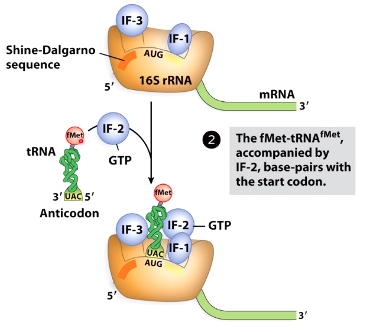
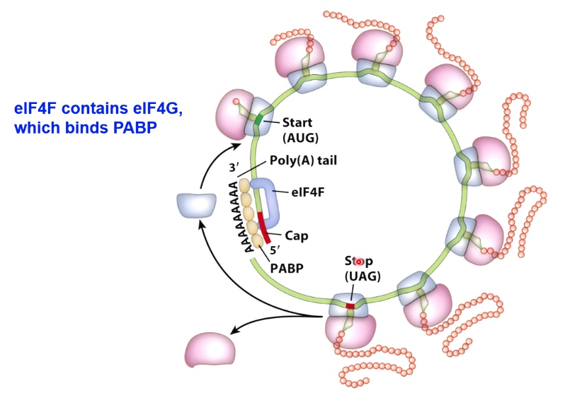

Translation.
Intergreting the Genetic Code
The way genetic code is interpreted by ribosomes.
The transfer RNA should know both language in mRNA and protein language.
tRNA Structure
Aminoacyl tRNA synthetases attach amino acids to tRNA
Ainoacyl tRNA synthetases attach amino acids to tRNAs.
- Class I Phe-tRNA synthetase
- Attach a.a. to 2' OH of ribose, later switches to 3' OH
- Class II Gln-tRNA synthetase (much larger)
- Attaches a.a. to 3' OH of ribose.
- Only 1 tRNA synthetase per amino acid(20 total). But tRNA synthetase can recognize several versions of tRNAs.
- Recognizes both the acceptor stem and the anti-codon loop of the RNA.
- <1 in 10,000 error rate.(Almost as good as transcription) How?
Aminoacyl-tRNA synthetases have proofreading capacity
Val-tRNA synthetase
ILE: isoleucine.
Val: valine.
Only Valine can fit into the active site, so tRNA(Val) can only be charged with valine.
ILE-tRNA synthetase
tRNA(ile) can be incorrectly charged with Val.
But Val-tRNA(ile) can fit into an editing pocket and the valien can be removed.
tRNA is very stupid, so now we need the help of tRNA synthetase.
Two Steps of Aminoacyl-tRNA Charging

Step 1
Adenylytion - transfer of AMP to the amino acid. (accompanied with hydrolysis)
Step 2
The charged tRNA stores energy that will later be used to make peptide bond.
tRNA is released in the second step.
The Genetic Code(nuclear DNA, eukaryotes)
- 64 possible condons
- One start codon(AUG)
- Three stop codons(UAA, UAG, UGA)
- The genetic code has evolved to resist single-base mutations, especially in the third position of the codon.
- Suppressor tRNAs exist in nature and can be engineered in the laboratory to allow continued translation at certain stop codons.(Suppress the stop codon from terminating the protein synthesis.)
tRNA-mRNA Base Pairing Occurs at the Anticodon Loop
Translation happens at tRNA-mRNA interface.
tRNA is charged by leucine, and the anticodon is CAG(5'->3'), which base pair with mRNA CUG(5'->3').
- The base at the 5' end of anticodon can pair with several bases at the 3' end of the codon.
- This is called "wobble base pairing".
Wobble Base Pairing Decreases the Total Number of tRNAs
Because of wobble effect, there are not 61 different tRNAs.
There are >= 32 tRNAs, depending on the organism.
Overview of Translation
Translation in Bacteria and Eukaryotes
Bacteria
Concurrent Transcription and Translation
Eukaryotes
Physical separation of transcription and translation.
Translation = Peptide bond formation
There is no energy input required for peptide bond formation.
- The energy was already invested when the tRNA was charged with the amino acid.
Overview of Protein Translation
- Transfer RNA will have an amino acid attached to it.
- The enzyme accomplished the charging of the transfer RNA of amino acids is called aminoacyl tRNA synthetase.
- Bacteria: Translate mRNA at 20 a.a./sec(60nt/sec.). Similar to the rate of transcription
- Eukaryotes: 2-4 a.a./sec (6-12 nt/sec). Because of this, some proteins can take many minutes to translate.
A Generic Translation Cycle
- Activation of amino acids: the tRNA is aminoacylated
- Initiation: the mRNA and the aminoacylated tRNA bind to the small ribsomal subunit. The large subunit then binds as well.(The details of this are different in eukatyotes)
- Elongation: Successive cycles of aminoacyl-tRNA binding and peptide bond formation occur until the ribosome reaches a stop codon.
- Termination: Translation stops when a stop codon is encountered. The mRNA and protein dissociate and the ribosomal subunits are recycled.
- Protein Folding
Ribosomes are Composed of rRNA and Ribosomal Proteins
Named for sedimentation velocity.
60% of rebosomes are rRNA, 40% are proteins, 25% of dry weight of E.coli cells are ribosomes.
rRNAs are transcribed by RNA pol I and III.
Features of the Ribosome

A little like RNA polymerase.
Three Binding Sites for tRNAs in the Ribosome
- E = exit site
- P = Peptidyl-tRNA binding
- A = aminoacyl-tRNA biniding
Translation Initiation
Overview of Translation Initiation in Bacteria
- Initiates with the initiator a.a. binding to the correct start codon on mRNA. Small subunit is going to be positioned on mRNA.
- Then large subunit comes and form the initiation complex.
The Shine-Dalgarno Sequence Positions the Small Subunit in the Correct Orientation
AGGAGGU Shine-Dalgrano sequence(UCCUCCA 16S rRNA). Which side will position mRNA with this start codon on the p side.
mRNA Structure in Bacteria
RBS: ribosomal binding site. (upstream of start codon.)(Shine-Dalgrano Sequence)
Not Always the case. In Non-overlapping genes, the figure above is true.
However, in overlapping genes, the following example, the start codon overlappes with stop codon.
Translation Initiation in Bacteria Requires Initiation Factors
IF-3 binds at the E site. prevents the premature binding of the large subunit.
IF-1 prevents the binidng of initiator tRNAs to the large subunit.
The result is all you have is the p side, which is where we want that 1st tRNA to come in.
The fMet tRNA is Escorted to the Small Subunit
IF-2 interact with 1st tRNA.

The tRNA charged with formal Met(methionine).
IF-2 escorts the fMet-tRNA to the P site.(carries formyl-methionine, which starts bacterial proteins.)
GTP Hydrolysis is a Common Way to regulate Progression of Translation
IF-2 hydrolyzing the GTP.
GTP hydrolysis is used by many translation-associated factors to induce comformational changes that promote their dissociation.
A Crucial Difference: Initiation in Eukaryotes Starts with Assembly of Proteins at the 5' Cap.
eIF4F is a complex containing
- eIF4A - RNA helicase
- eIF4E - binds 5' cap of mRNA
- 3IF4G - binds eIF4E, eIF3, and PABP.(poly A binding protein)
How did the complex move from the 5' cap to start codon?
Initiation of Translation in Eukaryotes Involves Scanning for the Start Codon
In this case, we are going to use helicase activity(eIF4A).
Helicase activity will allow the whole complex to scan along the messenger RNA until it reaches the start codon.
Experimental Evidence for Eukaryotic Ribosome Scanning: The Toeprint Assay
Basically, this is a primer extension assay using an mRNA as a template.
First anneal primer to the template, then do extension by reverse transcription.
1 Add nothing
If there is nothing at 5' cap, then the primer is going to be extended all the way to the 5' end. The product will be high on the gel because it is an high extension.
2 Add everything except RNA helicase
Can go almost 5' but not reach.
3. Add everthing
Just small piece because the complex begin to move.
Eukaryotic mRNAs can Circularize to Promote Re-initiation of Translation
